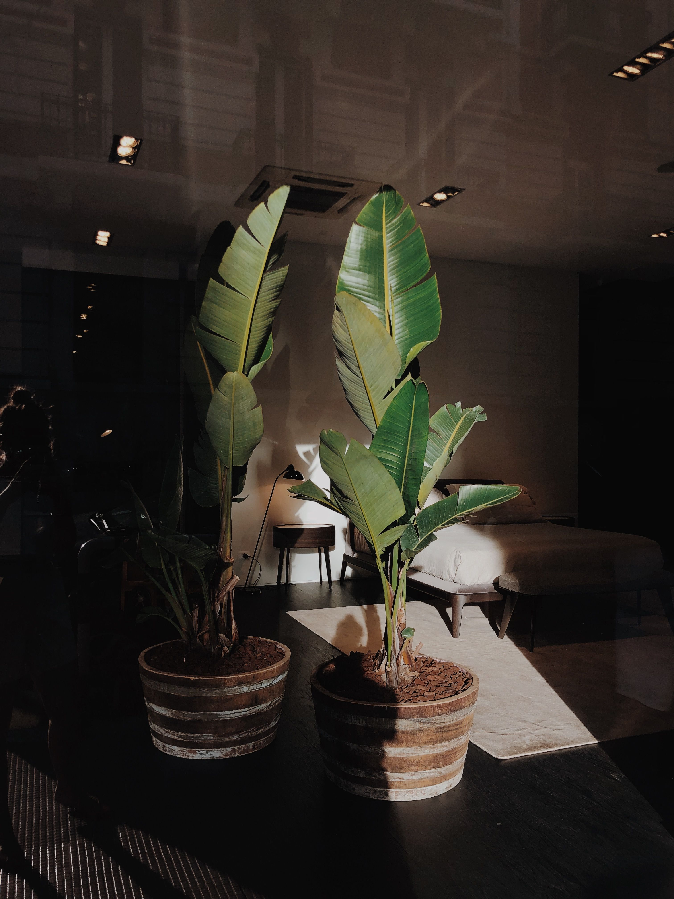
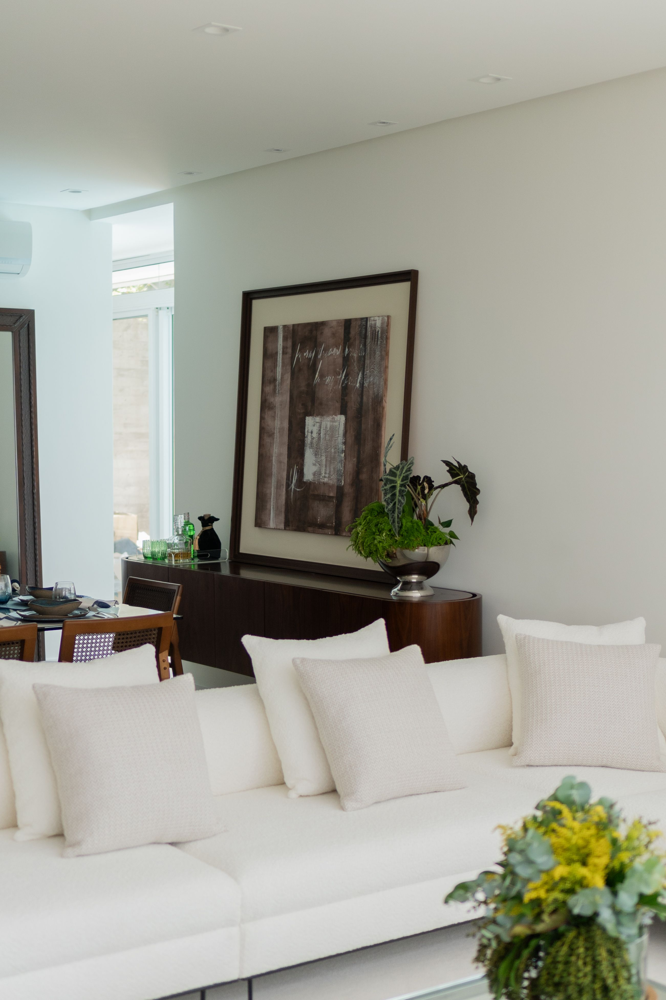

En este artículo
- Introducción
- Elegir la mejor ubicación para el rincón de desayuno
- Escoger una mesa proporcionada al espacio
- Elegir asientos cómodos y fáciles de mover
- Incorporar almacenamiento sin recargar la zona
- Combinar luz natural e iluminación artificial
- Dar personalidad al rincón sin perder funcionalidad
- Errores que conviene evitar al diseñar esta zona
- Cómo adaptar el proyecto a la vida diaria
- Probar el rincón de desayuno en una mañana real
- Preguntas frecuentes
- Conclusión
Introducción
Descubre cómo crear un rincón de desayuno cómodo en casa con una mesa proporcionada, asientos prácticos, buena luz, almacenamiento y una distribución que aproveche espacios pequeños. La diferencia entre una idea atractiva y un espacio que funciona durante años suele estar en la planificación. Antes de comprar, instalar o mover elementos, conviene observar las condiciones reales, medir y pensar en las rutinas de quienes utilizan la vivienda.
Esta guía desarrolla el proceso paso a paso con criterios prácticos. El objetivo no es copiar una fotografía, sino tomar decisiones adaptadas al tamaño disponible, la luz, el mantenimiento y el presupuesto. Así es posible obtener un resultado agradable sin introducir soluciones que después resulten difíciles de mantener.
Elegir la mejor ubicación para el rincón de desayuno
No hace falta disponer de un comedor independiente para crear una zona agradable donde desayunar. Una esquina de la cocina, el espacio junto a una ventana o una pared poco utilizada pueden funcionar si permiten sentarse y levantarse con comodidad. Antes de decidir, observa la circulación de la cocina: el rincón no debería bloquear el acceso al frigorífico, al fregadero ni a las principales superficies de trabajo.
La proximidad a la cocina facilita llevar y retirar platos, pero no conviene colocar los asientos en una zona donde interfieran con cajones o puertas. Mide tanto el espacio ocupado por la mesa como el que necesitan las sillas cuando están en uso. Un rincón que parece caber sobre el plano puede resultar incómodo si no se reserva espacio para mover los asientos.
Si existe una ventana, la luz natural puede convertir una zona pequeña en un lugar especialmente agradable por la mañana. Sin embargo, también hay que observar el sol directo y la temperatura. Una cortina ligera o un estor puede controlar el deslumbramiento sin perder luminosidad.
Escoger una mesa proporcionada al espacio
La forma de la mesa influye mucho en el aprovechamiento. Una mesa redonda facilita el movimiento en algunas esquinas y elimina cantos; una rectangular puede ajustarse mejor a una pared; y una mesa abatible permite liberar superficie cuando no se utiliza. La elección debe basarse en el número habitual de personas, no en reuniones ocasionales.
La profundidad también importa. Para desayunos sencillos no siempre se necesita una mesa grande, pero debe existir espacio suficiente para platos y tazas sin sensación de estrechez. Antes de comprar, reproduce el tamaño con cinta en el suelo o con cartón. Esta prueba ayuda a entender cuánto paso quedará alrededor.
En viviendas pequeñas, una prolongación de la encimera o una barra estrecha puede cumplir la función de rincón de desayuno. En ese caso, hay que elegir taburetes con altura correcta y dejar espacio suficiente para las piernas. Los asientos que pueden guardarse parcialmente bajo la superficie ayudan a mantener despejada la circulación.

Elegir asientos cómodos y fáciles de mover
Una silla bonita no sirve de mucho si resulta incómoda durante el uso diario. Comprueba altura, respaldo y facilidad para entrar y salir. Si el rincón está pegado a una pared, un banco puede aprovechar mejor la longitud disponible y permitir sentar a varias personas sin mover numerosas sillas.
Los bancos con almacenamiento interior añaden una función útil para guardar manteles, pequeños electrodomésticos o accesorios que no se utilizan constantemente. Sin embargo, la tapa debe poder abrirse sin chocar con la mesa. En espacios reducidos, cada función adicional debe seguir siendo cómoda en la práctica.
Los materiales deberían soportar el uso cotidiano y ser fáciles de limpiar. En una zona de comidas, superficies excesivamente delicadas pueden generar más preocupación que disfrute. Cojines lavables o desenfundables aportan confort sin complicar demasiado el mantenimiento.
Incorporar almacenamiento sin recargar la zona
El rincón de desayuno puede ayudar a organizar parte de la cocina si se aprovecha con moderación. Un banco con espacio interior, una pequeña repisa o un mueble estrecho cercano pueden guardar tazas, servilletas o elementos de uso frecuente. El objetivo no es convertir la zona en una despensa adicional, sino reducir desplazamientos innecesarios.
Las paredes permiten añadir almacenamiento cuando el suelo está ocupado. Una repisa sobre la mesa puede funcionar para algunos objetos decorativos o de uso ocasional, siempre que esté correctamente fijada y no quede a una altura incómoda. Evita sobrecargarla: demasiados objetos hacen que una zona pequeña parezca todavía más reducida.
Mantener parte de la superficie vacía es importante. Si la mesa se utiliza como depósito permanente de papeles, bolsas o aparatos, dejará de cumplir su función. Una bandeja pequeña puede reunir azucarero, servilletas u otros elementos y facilitar despejar la mesa rápidamente.
Combinar luz natural e iluminación artificial
La luz de la mañana puede ser uno de los mayores atractivos del rincón. Colocar la mesa cerca de una ventana, cuando la distribución lo permite, crea una sensación agradable y reduce la necesidad de iluminación artificial durante el día. Los tratamientos de ventana deben permitir regular la luz sin oscurecer innecesariamente la cocina.

Para desayunos tempranos o cenas informales, una lámpara sobre la mesa puede delimitar visualmente la zona. Debe quedar a una altura que ilumine sin bloquear la vista ni producir deslumbramiento. Si no es posible instalar una lámpara colgante, una luminaria de pared o una buena iluminación general pueden resolver la necesidad.
La iluminación también puede hacer que el rincón parezca integrado con el resto de la cocina. Repetir temperatura de color y algunos acabados crea continuidad. No hace falta convertir la zona en un escenario separado; basta con darle suficiente luz y una identidad clara.
Dar personalidad al rincón sin perder funcionalidad
Un rincón de desayuno admite detalles que aportan calidez: un pequeño cuadro, una planta adecuada a la luz, textiles lavables o una combinación de materiales. En un espacio reducido conviene elegir pocos elementos y dejar que la mesa y los asientos sean protagonistas. La acumulación visual puede restar tranquilidad.
Los colores pueden relacionarse con la cocina para que el rincón parezca parte del conjunto. Repetir un tono de los armarios o utilizar una madera similar es suficiente. Si se desea contraste, puede introducirse mediante cojines o arte, elementos fáciles de cambiar con el tiempo.
Finalmente, piensa en el uso más allá del desayuno. La misma zona puede servir para leer, trabajar durante un rato o acompañar a quien cocina. Una mesa estable, una toma eléctrica cercana y una iluminación adecuada amplían sus posibilidades sin necesidad de añadir más muebles.
Errores que conviene evitar al diseñar esta zona
El error más frecuente es elegir la mesa únicamente por su aspecto. Si es demasiado grande, bloqueará el paso; si es demasiado alta o baja para los asientos, resultará incómoda. Medir y probar proporciones antes de comprar evita devoluciones y cambios. También conviene pensar en cómo se moverán las sillas cuando todas estén ocupadas.
Otro problema aparece cuando el rincón se sitúa en medio del flujo de trabajo de la cocina. Una persona sentada no debería impedir que otra abra el frigorífico o utilice un cajón. Observar una mañana normal ayuda a detectar estos conflictos mejor que diseñar el espacio cuando la cocina está vacía.

Finalmente, evita convertir la mesa en almacenamiento permanente. Si siempre está cubierta de objetos, el rincón dejará de utilizarse. Un lugar cercano para papeles, cargadores y pequeños accesorios permite que la superficie esté disponible cuando llega la hora del desayuno.
Cómo adaptar el proyecto a la vida diaria
Antes de comprar el conjunto definitivo, prueba la zona con una mesa y sillas que ya tengas o representa sus medidas con cinta. Si alguien tiene que levantarse para que otra persona pueda pasar, la distribución necesita ajustes. También conviene simular acciones reales: llevar una bandeja desde la encimera, abrir un armario cercano y retirar los platos después de comer.
El presupuesto puede destinarse primero a una mesa estable y asientos cómodos. Cojines, cuadros y otros detalles pueden añadirse poco a poco. Si el espacio es muy reducido, un carpintero puede ofrecer una solución a medida, pero antes merece la pena comparar opciones abatibles o modulares disponibles. Lo importante es que la inversión corresponda a la frecuencia de uso.
Una zona de desayuno bien resuelta puede mejorar la organización general de la cocina porque ofrece un lugar definido para comidas rápidas. Para mantener esa ventaja, evita usarla como escritorio permanente o superficie de almacenamiento. Si también se utiliza para trabajar, establece una rutina sencilla para retirar ordenador y papeles antes de las comidas.
Probar el rincón de desayuno en una mañana real
La mejor prueba consiste en utilizar el rincón durante varios desayunos antes de añadir más decoración. Observa dónde colocas la cafetera, el pan, las tazas y los platos, y comprueba si la mesa ofrece superficie suficiente. Si necesitas mover objetos constantemente para sentarte, quizá falte una pequeña solución de almacenamiento o la mesa no tenga la proporción adecuada. La experiencia diaria proporciona información más útil que una composición preparada solo para verse bonita.
También conviene evaluar el confort después de permanecer sentado un rato. La altura de la mesa, el apoyo del respaldo y el espacio para las piernas influyen en que la zona se utilice de verdad. Si los asientos se eligieron únicamente porque cabían, puede ser necesario ajustar cojines o sustituirlos por una opción más cómoda. Un rincón pequeño no tiene por qué ser incómodo.
Por último, revisa la facilidad de limpieza. Migas, bebidas y manchas forman parte normal de una zona de comidas. Superficies lavables, textiles fáciles de retirar y acceso al suelo alrededor de la mesa reducen el trabajo. Cuando limpiar requiere mover demasiados elementos, la decoración termina convirtiéndose en un obstáculo para el uso cotidiano.
Preguntas frecuentes
¿Cuánto espacio hace falta para un rincón de desayuno?
No existe una medida única. Lo importante es que la mesa y los asientos quepan dejando espacio suficiente para sentarse, levantarse y circular sin bloquear puertas o zonas de trabajo.
¿Qué mesa funciona mejor en una cocina pequeña?
Las mesas abatibles, redondas compactas, estrechas junto a una pared o las barras pueden funcionar bien. La mejor opción depende de la forma del espacio y del número de usuarios.
¿Se puede usar un banco en lugar de sillas?
Sí. Un banco puede aprovechar una pared y reducir el espacio necesario para mover asientos. Los modelos con almacenamiento añaden utilidad si la apertura sigue siendo cómoda.
Conclusión
Cómo crear un rincón de desayuno cómodo sin ocupar demasiado espacio es un proyecto que mejora cuando se toman decisiones a partir del uso real del espacio. Medir, observar las condiciones, priorizar la funcionalidad y elegir soluciones que puedan mantenerse con facilidad evita compras innecesarias y permite que el resultado evolucione con la vivienda.
No es necesario transformar todo de una vez. Empezar por los cambios que resuelven necesidades concretas, comprobar cómo funcionan y ajustar después suele ofrecer mejores resultados. La estética cobra más sentido cuando acompaña a la comodidad, al orden y a un mantenimiento razonable.